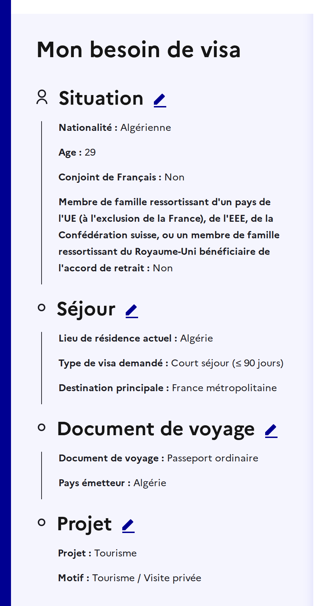
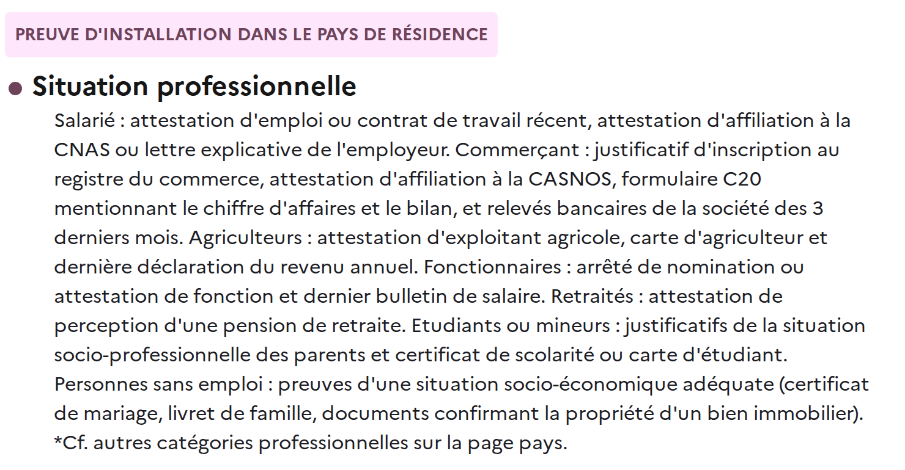
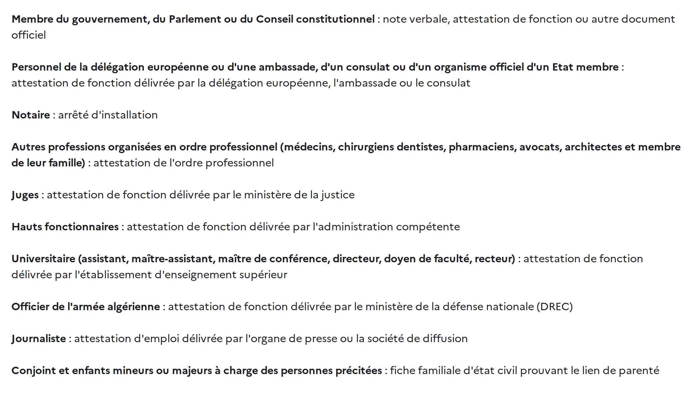

Venir en France depuis l'Algérie : en amie, comme jeune au pair, en vue d'un mariage. Trois voies tentées, trois traverses sur le chemin — pendant que le mariage, lui, avance. Voici le parcours, pièce par pièce et règle par règle, et pourquoi il n'aurait pas ressemblé à ça il y a dix ou vingt ans.
Trois statuts possibles pour se retrouver, trois démarches réellement engagées, trois traverses — chacune d'une nature différente.
Cliquez sur une porte pour savoir pourquoi elle ne s'ouvre pas.
Pour un visa de tourisme, l'État français demande de prouver qu'on est attaché à son pays : un emploi, un commerce, une retraite, ou des études en cours. C'est une liste fermée.
Or aucune de ces preuves n'est disponible : l'université refuse de délivrer le certificat de scolarité, et il n'y a ni emploi, ni bien immobilier. La seule autre case, « personne sans emploi », réclame un acte de mariage ou un titre de propriété.
Résultat : le dossier est incomplet avant même d'être déposé — et le refus reste cinq ans au fichier européen des visas.
→ Le détail et les captures officiellesÊtre au pair, ce n'est pas un emploi. C'est une convention : logement, repas, et un argent de poche d'au moins 320 € par mois. Ce n'est pas un salaire, et c'est voulu — précisément pour que ce ne soit pas un contrat de travail.
Au guichet, le 9 février 2026, on a réclamé… une autorisation de travail. Or ce statut n'en suppose aucune : c'est justement la convention qui en tient lieu.
La démarche a tout de même été tentée auprès de l'administration française : impossible. Ce n'est pas ce dossier-là qui était mal ficelé — la pièce réclamée n'existe pas pour ce statut.
→ Les textes qui le prouventCelle-là est allée au bout : dossier instruit, et même une audition au consulat. Le 10 juin 2026, le consulat général de France à Oran a refusé.
Sur les seize motifs possibles du formulaire européen, une seule case est cochée : « les informations communiquées ne sont pas fiables ». On ne reproche donc pas un papier manquant — on met en doute la sincérité du projet.
Un recours a été déposé dans le délai de trente jours, complété en juillet. Il est toujours sans réponse.
→ La décision et la chronologie du recoursNeuf mois, trois procédures, deux pays, et pas une seule fois la possibilité de se retrouver en France. Les seules retrouvailles ont eu lieu dans un pays tiers, parce que c'était le seul endroit où les deux pouvaient entrer.
Ce document ne plaide rien. Il rassemble les règles publiées par l'État français et les décisions reçues, pour qu'on puisse constater soi-même où chaque voie s'arrête. Chaque affirmation est liée à sa source en bas de page ; les pièces nominatives sont accessibles séparément, à la famille uniquement.
Une conversation avec Gemini, archivée en PDF.
Dans cet échange, Gemini décrit d'abord la procédure normale, puis conclut — une fois la situation réelle précisée — que déposer le dossier expose à un « refus quasi-certain ». Cette page vérifie cette conclusion pièce par pièce.
La conversation complète est archivée en PDF, mais elle n'est pas publiée ici : elle contient des éléments personnels. Elle est consultable dans le dossier en accès restreint, avec les autres pièces.
Le fait décisif : l'administration universitaire refuse de délivrer un certificat de scolarité ou une attestation d'inscription pour une démarche personnelle. Sans ce document, le statut d'étudiant ne peut pas être prouvé.
Ce n'est pas une hésitation sur les faits. C'est une précision juridique.
« J'utilise le mot “quasi” par rigueur, pour une raison juridique très simple : en droit, un risque zéro ou un refus à 100 % n'existe pas de façon absolue. Le consulat conserve ce qu'on appelle un pouvoir souverain d'appréciation. »
Gemini, dans la conversation citée
Autrement dit : « quasi » ne porte pas sur la solidité du dossier, il porte sur le fait qu'aucune décision administrative ne peut être garantie à l'avance. Un agent consulaire garde le droit d'accorder un visa même à un dossier atypique. Personne — ni une IA, ni un avocat, ni un intermédiaire — ne peut donc écrire « refus à 100 % ».
Ce que Gemini écrit juste après est en revanche sans nuance :
« Sans preuve d'études ni emploi ni biens immobiliers, le visa sera refusé. […] Votre dossier ne coche aucune des cases réglementaires imposées par le Code communautaire des visas Schengen. »
Gemini, dans la conversation citée
À retenir : « quasi-certain » n'est pas « peut-être ». C'est la formulation la plus forte qu'on puisse employer sans mentir sur la nature d'une décision discrétionnaire.
Ce n'est pas une interprétation : c'est écrit sur le site de l'État français.
L'assistant visa de France-Visas (le site officiel de l'État) génère la liste des pièces exigées selon le profil exact du demandeur. Voici le profil saisi, et le résultat obtenu le 20 septembre 2026 :

Dans la liste des justificatifs produite, une rubrique s'appelle « Preuve d'installation dans le pays de résidence ». Son premier point est « Situation professionnelle », et il est obligatoire :

Chaque catégorie a son justificatif imposé : salarié → attestation d'emploi + affiliation CNAS ; commerçant → registre du commerce + CASNOS + formulaire C20 ; agriculteur → carte d'agriculteur ; fonctionnaire → arrêté de nomination ; retraité → attestation de pension. Il n'existe pas de case « sans justificatif ».
C'est là que le dossier se bloque, mécaniquement.
Pour ce profil, la liste officielle n'ouvre que deux catégories. Les voici, mot pour mot, avec ce qu'elles exigent :
« justificatifs de la situation socio-professionnelle des parents et certificat de scolarité ou carte d'étudiant »
Impossible : l'université refuse de délivrer le certificat de scolarité.
« preuves d'une situation socio-économique adéquate (certificat de mariage, livret de famille, documents confirmant la propriété d'un bien immobilier) »
Impossible : célibataire, sans enfant, sans bien immobilier ni bail à son nom.
Le blocage est structurel, pas subjectif. Impossible de se déclarer étudiant, faute de preuve ; et en basculant dans « sans emploi », les preuves réclamées sont précisément celles qu'une personne de 29 ans, célibataire, en doctorat et vivant chez ses parents, n'a pas. La rubrique est alors comptabilisée comme non justifiée — et c'est une rubrique obligatoire.
S'y ajoute la rubrique « Ressources » de la même liste officielle, qui exige « relevés de compte bancaire originaux des 3 derniers mois (émanant de la banque et non édités via internet), 3 derniers bulletins de paie, prise en charge des frais par une personne privée (avec preuves de ressources de l'hôte ou du garant), ou attestation de pension ». Sans revenus propres, tout repose sur un garant — ce qui renforce, et non corrige, l'absence d'autonomie financière.
Le consulat ne « décide pas au feeling » : il remplit un formulaire à cases.
Les visas de court séjour sont régis par le code communautaire des visas — règlement (CE) n° 810/2009. Deux articles font tout :
Le consulat doit vérifier que le demandeur remplit les conditions d'entrée, et apprécier en particulier le risque d'immigration illégale et la volonté de quitter le territoire avant l'expiration du visa. C'est l'ancrage dans le pays de résidence — emploi, famille, biens — qui sert à établir cette volonté de retour.
Le visa est refusé notamment si le demandeur ne fournit pas la justification de l'objet et des conditions du séjour, s'il ne prouve pas ses moyens de subsistance, ou si « la volonté du demandeur de quitter le territoire des États membres avant l'expiration du visa n'a pas pu être établie ». Le refus est notifié au moyen du formulaire type de l'annexe VI : l'agent coche le motif dans une liste fermée.
Dans ce dossier, deux cases de ce formulaire sont directement ouvertes : « les conditions du séjour ne sont pas justifiées » et « la volonté de quitter le territoire n'a pas pu être établie ». Ce sont exactement les deux motifs que Gemini annonce.
Le vrai coût n'est pas l'argent : c'est la trace.
Chaque demande laisse une trace, accordée ou non. Depuis 2011, toute demande de visa est enregistrée avec les empreintes digitales dans le VIS, le fichier d'information sur les visas commun à tout l'espace Schengen. Un refus y est visible par n'importe quel consulat Schengen lors des demandes suivantes, pendant cinq ans. Un dossier déposé « pour voir » n'est donc pas un simple coup d'essai : il pèse sur la demande d'après.
Accessoirement, côté finances : les frais de dossier (90 €, soit environ 13 600 DZD) sont, selon France-Visas, « conservés par l'administration, même en cas de refus de visa », et les frais de service du prestataire (environ 29 €) « ne sont pas remboursables, sauf cas exceptionnel ». Voir la capture du tarif officiel. C'est la partie la moins grave de l'affaire.
Une voie fermée par une exigence que le statut lui-même rend impossible à satisfaire.
Un dossier complet a été constitué : convention CERFA 15973*01 « conclue entre le jeune au pair et la famille d'accueil », signée le 30 décembre 2025, accompagnée du CV, de la lettre d'invitation, d'une assurance, d'un certificat de niveau d'anglais et des diplômes traduits. Rendez-vous pris et frais payés auprès du centre agréé.
Il n'existe aucun refus écrit pour cette voie, et il ne faut pas en inventer un. Le dossier n'a jamais atteint le consulat : au guichet, le 9 février 2026, une autorisation de travail a été exigée. Le dossier a été repris plutôt que laissé sans garantie, avec le passeport. Le dossier a été repris — laisser un passeport sans garantie n'était pas envisageable. Il n'y a donc ni décision, ni motif coché, ni recours possible : la demande s'est arrêtée avant d'exister.
C'est ici que la voie se referme, et pour une raison de principe : le statut de jeune au pair est défini par l'absence de contrat de travail.
Le piège est dans les mots. La page France-Visas décrit la convention comme précisant « les conditions d'emploi, de rémunération ». Lue au guichet, cette phrase devient « autorisation de travail ». Mais le texte qui crée le statut, lui, parle d'argent de poche — et c'est délibéré : l'argent de poche existe précisément pour que la relation au pair ne soit pas assimilée à un emploi salarié. Exiger une autorisation de travail pour un dossier au pair, c'est réclamer une pièce que le statut ne prévoit pas — et la tentative de l'obtenir malgré tout, en février 2026, s'est heurtée à cette impossibilité.
Et cette porte a une date de péremption. La condition d'âge est de 18 à 30 ans. Elle ne se rouvrira pas : chaque année écoulée la referme un peu plus, indépendamment de toute décision administrative.
La seule des trois à être allée jusqu'à une décision. Elle a été refusée — et le motif retenu n'est pas celui qu'on imagine.
Une demande de visa a été déposée en vue d'un mariage prévu le 27 juin 2026. Le dossier est allé au bout de la procédure : instruction par le consulat, et convocation à une audition préalable le 9 avril 2026 — une étape qui n'intervient que lorsque l'administration examine la sincérité du projet, pas la complétude des pièces.
Le 10 juin 2026, le consulat général de France à Oran a refusé le visa, sur le formulaire type européen — celui de l'annexe VI du code des visas, décrit plus haut. Sur les seize motifs possibles, un seul est coché :
☒ 10. Les informations communiquées pour justifier l'objet et les conditions du séjour envisagé ne sont pas fiables.
Formulaire de refus, consulat général de France à Oran, 10/06/2026 — les quinze autres cases sont vides, la rubrique « Autres remarques » également.
Ce motif dit quelque chose de précis, et il faut le lire exactement. Ce n'est pas le motif 2 (« l'objet et les conditions du séjour n'ont pas été justifiés ») : on ne reproche pas un dossier incomplet. Ce n'est pas le motif 13 (« doutes quant à votre volonté de quitter le territoire ») : on ne reproche pas un risque de maintien. Le motif 10 met en cause la fiabilité de ce qui a été déclaré — c'est-à-dire la crédibilité du projet lui-même. Aucune pièce supplémentaire ne répond mécaniquement à ce reproche : c'est une appréciation, et c'est exactement ce qu'un recours conteste.
Le formulaire de refus indique lui-même la marche à suivre : contester la décision « auprès du sous-directeur des visas, BP 83609, 44036 Nantes cedex 1, dans un délai de trente jours », étant précisé que « la saisine du sous-directeur des visas est un préalable obligatoire à tout recours contentieux ». Le tribunal administratif de Nantes est la juridiction désignée pour la suite.
Les pièces de cette voie — formulaire de refus, recours et son complément, accusés de réception — sont nominatives et ne figurent pas sur cette page. Elles sont consultables séparément, en accès restreint.
Cinq changements concrets, datés, qui expliquent l'écart entre le souvenir et la réalité d'aujourd'hui.
En résumé : il y a vingt ans, un dossier incomplet pouvait passer, le refus ne laissait pas de trace et ne coûtait presque rien. Aujourd'hui, la liste des pièces est générée automatiquement par profil, le refus est motivé par une case cochée dans un formulaire européen, et il reste cinq ans dans un fichier partagé. Ce n'est pas le même examen, et ce n'est plus le même enjeu.
Le visa France reste largement délivré — mais plus à n'importe quel dossier.
| Indicateur | Valeur |
|---|---|
| Demandes déposées (Alger, Oran, Annaba) | 248 684 |
| Refus | 72 740 |
| Taux de refus global — France / Algérie | 29,2 % |
| Consulat d'Alger | 24,6 % |
| Consulat d'Oran | 38,5 % |
| Tous consulats Schengen en Algérie (2024 → 2025) | 35 % → 31 % |
Comment lire ces chiffres. Près de sept demandes sur dix aboutissent : le visa n'est pas devenu inaccessible. Mais ces 70 % de réussite sont portés par les dossiers qui cochent les cases — salariés avec fiches de paie et affiliation CNAS, commerçants avec registre du commerce, fonctionnaires, retraités. Un dossier sans aucune preuve de statut ne se compare pas à cette moyenne : il se compare à la part des refus, où il tombe presque par construction.
Aucune « autre procédure » n'existe pour le visa touristique. Et ni le refus de l'université, ni même l'obtention du doctorat ne se règlent comme on l'imagine.
On dit souvent « l'université refuse de délivrer le certificat pour une démarche personnelle ». Avant d'insister, il faut savoir ce que le refus recouvre réellement, parce que le doctorat algérien est encadré par un texte précis — l'arrêté n° 028 du 9 janvier 2022 du ministère de l'Enseignement supérieur :
Deux situations en découlent, et elles n'appellent pas du tout la même démarche :
Le certificat de scolarité ne fait alors qu'attester un fait qui existe. Aucun texte ne subordonne sa délivrance au motif pour lequel on le demande : refuser « parce que c'est personnel » est une pratique de guichet, pas une règle.
→ Il y a bien quelque chose à débloquer. Faire remonter : directeur de thèse, directeur de laboratoire, chef d'établissement — ou produire le reçu / l'attestation de réinscription de l'année en cours, qui prouve le même fait.
Dérogation non obtenue ou non demandée au terme des trois ans : l'exclusion de l'article 32 s'applique. Il n'existe alors aucun document à délivrer, puisqu'il n'y a plus d'inscription à certifier.
→ Ce n'est pas un blocage administratif : insister ne produira rien. La seule voie universitaire est une réinscription dérogatoire (art. 22) si elle est encore possible.
Et l'attestation d'avancement de thèse ? C'est ce que suggère Gemini pour contourner le blocage. Elle ne figure pas dans la liste de France-Visas, qui exige nommément « certificat de scolarité ou carte d'étudiant ». Une lettre du directeur de thèse peut accompagner un dossier — elle ne peut pas remplacer la pièce exigée. C'est une atténuation, pas une solution.
On pourrait croire qu'une fois docteur, tout se débloque. C'est faux, et il faut le dire nettement : un diplôme n'est jamais un justificatif. Il n'existe aucune catégorie « diplômé » dans la liste officielle.
La page Algérie de France-Visas publie une liste étendue des « justificatifs spécifiques pour les personnes exerçant une profession/activité spécifique ». Elle le confirme ligne par ligne :

Regardez la ligne qui s'appliquerait ici : « Universitaire (assistant, maître-assistant, maître de conférence, directeur, doyen de faculté, recteur) : attestation de fonction délivrée par l'établissement d'enseignement supérieur ». Pas « docteur ». Pas « titulaire d'un doctorat ». Une fonction, attestée par un tiers. Et c'est vrai de chaque ligne de cette liste, du notaire au journaliste.
Conséquence contre-intuitive : soutenir sans débouché ne débloque rien — et referme même une porte. Une fois la thèse soutenue, il n'y a plus d'inscription : plus de certificat de scolarité possible, donc la case « Étudiants ou mineurs » disparaît définitivement. Le dossier retombe dans « Personnes sans emploi », qui réclame un certificat de mariage, un livret de famille ou un titre de propriété. Le même mur qu'aujourd'hui, mais sans même la situation A.
Le doctorat n'est pas la sortie ; il est ce qui donne accès à la sortie. La sortie, c'est d'être rattachée à quelque chose qui peut l'attester. Deux formes, et deux seulement :
Pourquoi la seconde voie change la nature du problème. Elle s'apprécie sur la convention d'accueil d'un laboratoire français, pas sur la capacité à prouver qu'on rentrera. Le motif qui bloque le dossier touristique — « la volonté de quitter le territoire n'a pas pu être établie » — n'y occupe plus la même place. Mais elle n'est pas un droit attaché au diplôme : il faut être recruté, invité ou financé. C'est donc un objectif à préparer avant la soutenance, pas une conséquence automatique.
La bonne question n'est donc pas « quand soutenir ? » mais « soutenir vers quoi ? ». Post-doc, poste d'assistant, convention d'accueil, contrat : c'est le débouché qui produit le justificatif. Une soutenance sans débouché laisse la situation administrative exactement où elle est — et supprime au passage le statut d'étudiant.
Attention au raccourci inverse. Le guide d'accueil des doctorants et chercheurs internationaux de l'Université Paris-Saclay, dans sa fiche consacrée aux ressortissants algériens, est explicite : les visas touristique et stagiaire « ne peuvent être prolongés ou modifiés vers un autre statut ». Pour commencer une thèse ou une recherche en France, il faut « retourner dans votre pays de résidence/d'origine pour refaire une nouvelle demande de visa adaptée ». Entrer comme touriste n'ouvre donc aucune porte — cela ferme celle d'après.
Trois fausses pistes, à écarter formellement.
Le conseil qui découle de tout ça n'est pas « n'y allez pas », c'est : ne déposez pas un dossier qu'on sait incomplet — un refus de plus reste cinq ans au fichier — établissez d'abord si l'inscription existe encore, puis visez le rattachement qui produira le justificatif — un poste, une activité déclarée, ou une convention d'accueil. C'est lui qui fait le dossier, pas le diplôme.
Tout ce qui précède est vérifiable. Chaque lien ouvre la source d'origine.
Les captures d'écran France-Visas ont été réalisées le 20 septembre 2026 en renseignant dans l'assistant officiel le profil décrit en section 1 (nationalité algérienne, 29 ans, résidence Algérie, court séjour ≤ 90 jours, France métropolitaine, passeport ordinaire, tourisme / visite privée). Les listes de justificatifs affichées par France-Visas dépendent du pays de dépôt et peuvent évoluer : la page fait foi, pas cette capture.
{kind=link}
{kind=link}